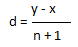

Natural Number:All the counting numbers are called namtural numbers.The collection or set of natural numbers is denoted by N.
In other words we can say that natural numbers starts from 1 and continues up to infinty. N={1,2,3,4,5,.........}
Whole Number:Collection of natural numbers together with 0 is called whole number. The collection or set of whole numbers is denoted by W.
W={0,1,2,3,4,5,..................}
Integers:Natural numbers togetherwith zero and negative of natural numbers forms the set of Integers. The set of Integers
is denoted by Z. Z={...........,-4,-3,-2,-1,0,1,2,3,4,...........}. The set of all positive inegers is denoted by Z+ and that of negative
Integers is denoted by Z-Rational Numbers:The Numbers which can be written in the form of p/q, where q≠ 0. The set of rational numbers is denoted by Q.
Irrational Numbers:The numbers which can not be writtenin the form of p/q are called Irrational numbers. The set of irrational numbers is
generally denoted by P or R/Q. eg: π,√ 2,∛ 4 etc.
Real Numbers:Rational numbers and irrational numbers together forms the set of Real numbers. The set of real numbers is denoted by R.
Inserting rational numbers between two given rational numbers
Let there are two rational numbers x and y. x < y. To find n rational numbers between x and y. Method1: , Now we have three rational numbers x,c1,y. Repeat the same method for x and c1 or
c1 and y to find next rational number. Method2:
First of all calculate d using the formula . Then the n rational numbers are given by A1=x + d, A2=x + 2d..........., An=x + nd.
Examples are illustrated in video.
Watch on Youtube